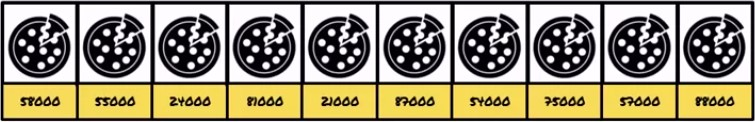
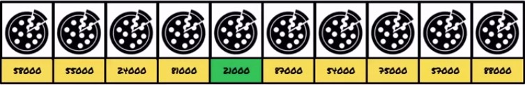
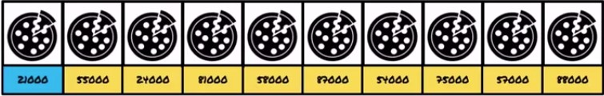
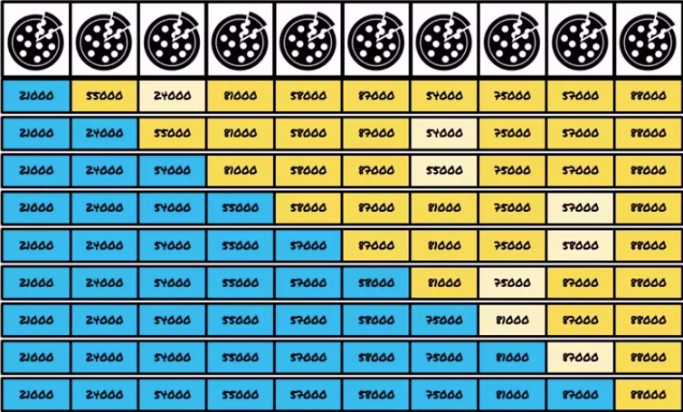

Actividad
Seguir los siguientes lineamientos para llevar a cabo esta actividad:
1. Definir una parte ordenada
2. Buscar el menor (o mayor) de la parte desordenada
3. Intercambiarlo con el primero de la parte desordenada
4. Repetir hasta ordenar todos
Ejemplo de guia
Definimos una parte ordenada:
forma desordenada:

buscamos el menor:

intercambiamos el menor con el primero de la parte desordenada:

repetimos hasta ordenar todos:

El código sería el siguiente:
public class Cocinero{
private ArrayList[Pizza] pizzas;
public void ordenarPizzasPorPrecio(){
Buscamos el menor de la parte desordenada (asumiendo que hay elementos):
for(int i=0; i < pizzas.size() - 1; i++){
int menor=pizzas.get(0);
int posMenor=0;
for(int j=1; j< pizzas.size(); j++){
Pizza actual= pizzas.get(j);
if(actual.darPrecio()< menor.darPrecio()){
menor=actual;
posMenor=j;
}
}
Intercambiamos el menor con el primero de la parte desordenada
Pizza trmp=pizzas.get(0);
pizzas.set(0,menor);
pizzas.set(posMenor,temp);
}
}
}
• Realice dos implementaciones del algoritmo de selección de manera que en la primera implementación se realice la selección del elemento mayor en cada iteración y en la segunda la selección del menor. .
• Dado un array de N elementos, encontrar el k-ésimo más pequeño. Por ejemplo, si tenemos (4, 6, 1, 3, 8, 34, 76, 12), el 3-ésimo más pequeño será el 4. Obviamente, podríamos ordenar los elementos para tal fin, pero la selección puede resolverse de manera más eficiente. Basándonos en QuickSort, podemos resolver el problema en un tiempo esperado O(n). Se debe realizar la codificación de un algoritmo que resuelva el problema de la selección.
• Se dispone de una colección de 10 CDs de los cuales se guarda la siguiente información:
a. Nombre del grupo o intérprete
b. Fecha de edición
c. Firma discográfica
d. Duración del CD
Se quiere implementar un programa que ordene la colección por nombre de grupo o intérprete teniendo en cuenta que ante dos CDs del mismo grupo estos deben aparecer ordenados por fecha de edición. .